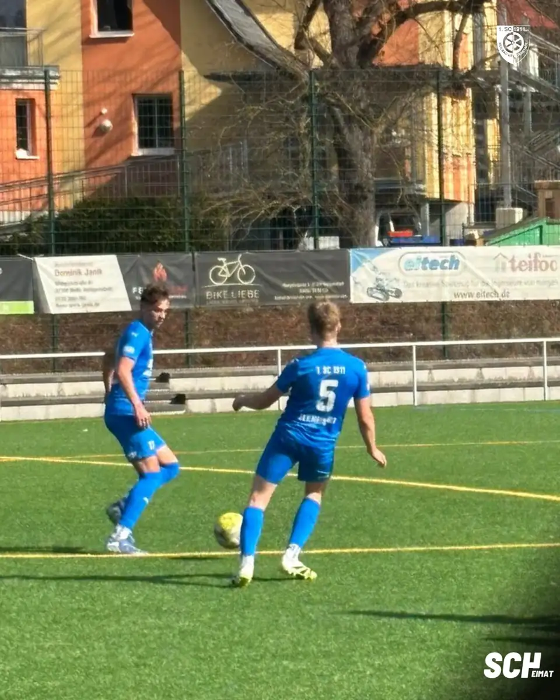
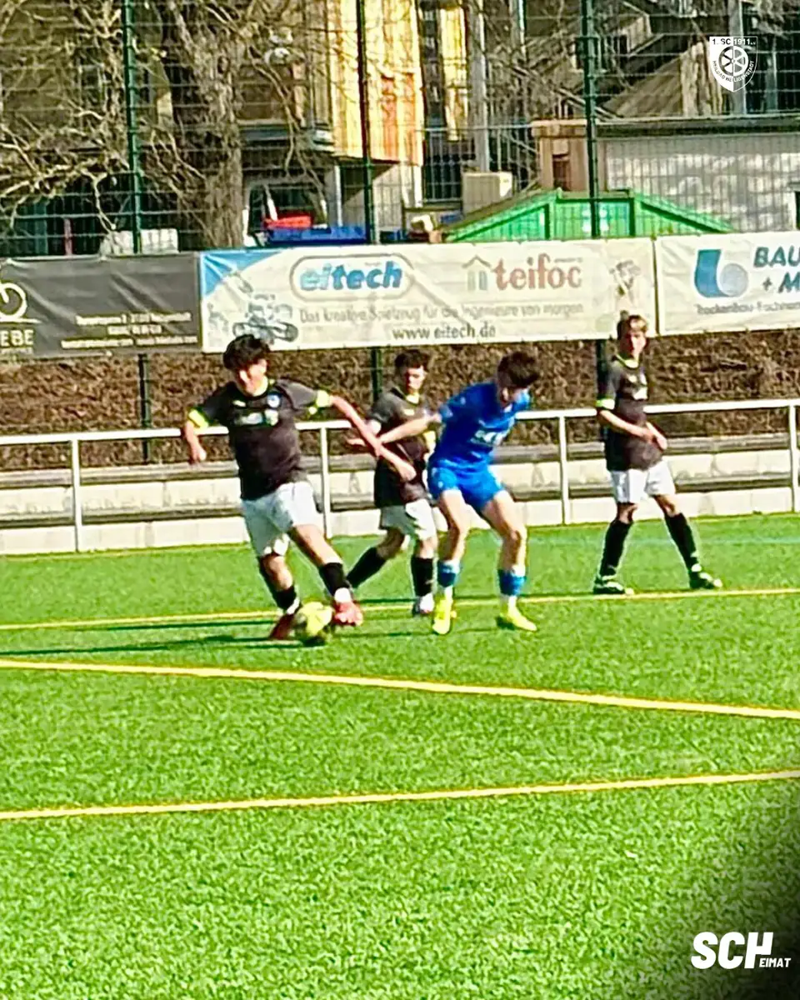
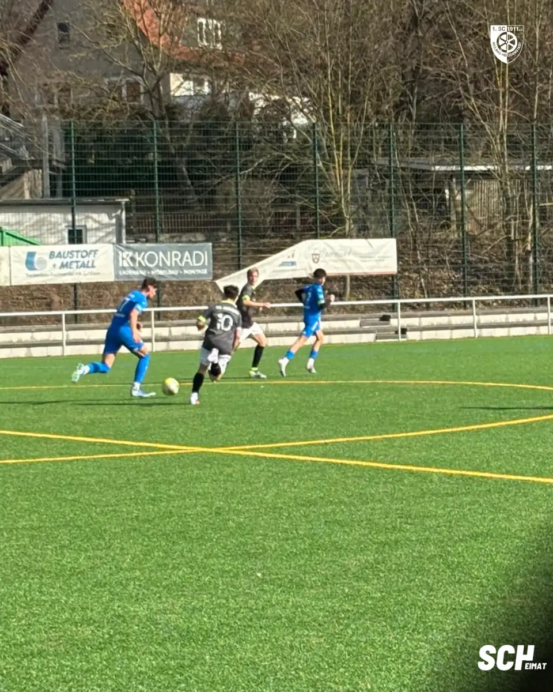
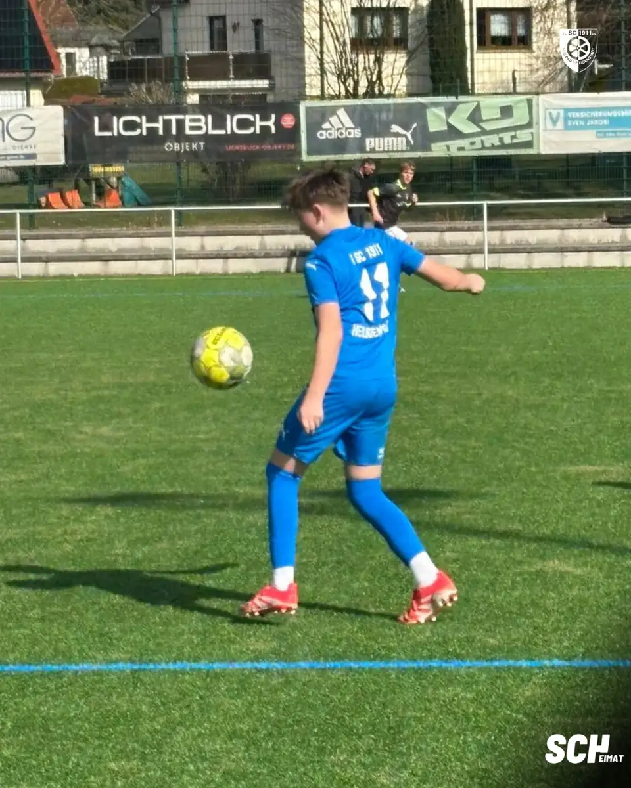

Am Samstag stand für unsere C2-Junioren das erste Heimspiel der Rückrunde auf dem Programm. Gleichzeitig feierte auch der neue Trainer Christopher Schaaf seinen Einstand an der Seitenlinie. Im Verein ist er kein Unbekannter, denn bereits in der Vergangenheit betreute er eine C-Jugend in Heiligenstadt und kennt das Umfeld bestens.
Im Nachholspiel gegen die SG Ammern zeigten unsere Jungs von Beginn an eine konzentrierte Leistung. Bereits in der ersten Halbzeit stellte der SCH die Weichen klar auf Sieg. Nino Arendt eröffnete das Spiel mit dem 1:0 in der 17‘ Minute, anschließend traf Konrad Meitzner gleich dreifach (23.,35.,35.) und sorgte so für eine verdiente 4:0-Pausenführung der Heiligenstädter.
Auch nach dem Seitenwechsel blieb unsere Mannschaft spielbestimmend. Robert Eckart (41.), Lukas Drößler (54.) und Theo Nolte (66.) erhöhten weiter, während Silas Wiemuth (58.) per Elfmeter ebenfalls erfolgreich war.
Am Ende stand ein deutlicher und verdienter 8:0-Heimsieg für unsere Jungs vom SCH – ein gelungener Start in die Rückrunde und ein erfolgreicher Auftakt für Trainer Christopher Schaaf.
Spieldaten
1. SC 1911 Heiligenstadt U15 CII – SG Ammern 8:0 (4:0)
1. SC 1911 Heiligenstadt U15 CII
Struthmann – Bierwisch – Böer – Eckart (42. Drößler) – Gries – Arendt – Meier – Meitzner – Wiemuth – Nöttgen (29. Alfathi) – Nolte
JFV Eichsfeld Mitte
Schmidt – Bickel – Gerbig – Wiesel – Kunert – Meyenberg – Spiller – Gräbedünkel (56. Zimmermann) – Linke – Alshlash – Schmidt
Schiedsrichter
Prösch
Tore:
1:0 Arendt (17.), 2:0 Meitzner (23.), 3:0 Meitzner (35.), 4:0 Meitzner (35.), 5:0 Eckart (41.), 6:0 Drößler (54.), 7:0 Wiemuth (58.), 8:0 Nolte (66.)



